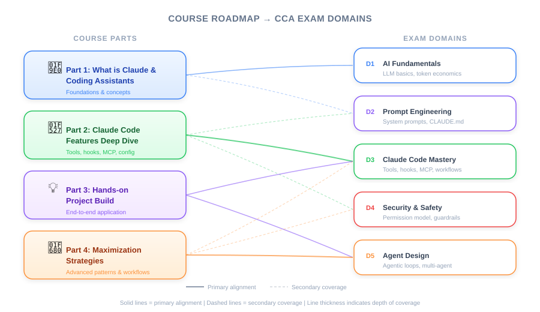

| Item | Detail |
|---|---|
| Exam Domain | General — Course roadmap for all 5 domains |
| Task Statements | Overview (no specific deep coverage) |
| Source | claude-code-in-action / 01-intro / Lesson 02 |
Steven Greider from Anthropic introduces a 4-part course covering what coding assistants are, what makes Claude Code special, hands-on project work, and strategies for maximizing Claude Code in your own projects.

| Part | Topic | Likely Exam Domains |
|---|---|---|
| 1 | What is a coding assistant | D1 (Agentic Architecture), D2 (Tool Design) |
| 2 | What makes Claude Code special | D3 (Claude Code Config & Workflows) |
| 3 | Hands-on with Claude Code in a project | D3 (Config), D4 (Testing & Eval) |
| 4 | How to maximize Claude Code in your own projects | D3 (Workflows), D5 (Reliability) |
💡 Why this lesson matters for the exam
This is a course overview with no testable content on its own. However, it establishes the mental map for the entire course. Parts 1-2 align with D1-D3 (architecture and configuration), while Parts 3-4 connect to D4-D5 (testing, evaluation, and reliability).
The instructor is Steven Greider from Anthropic — knowing the source authority can help contextualize guidance throughout the course.